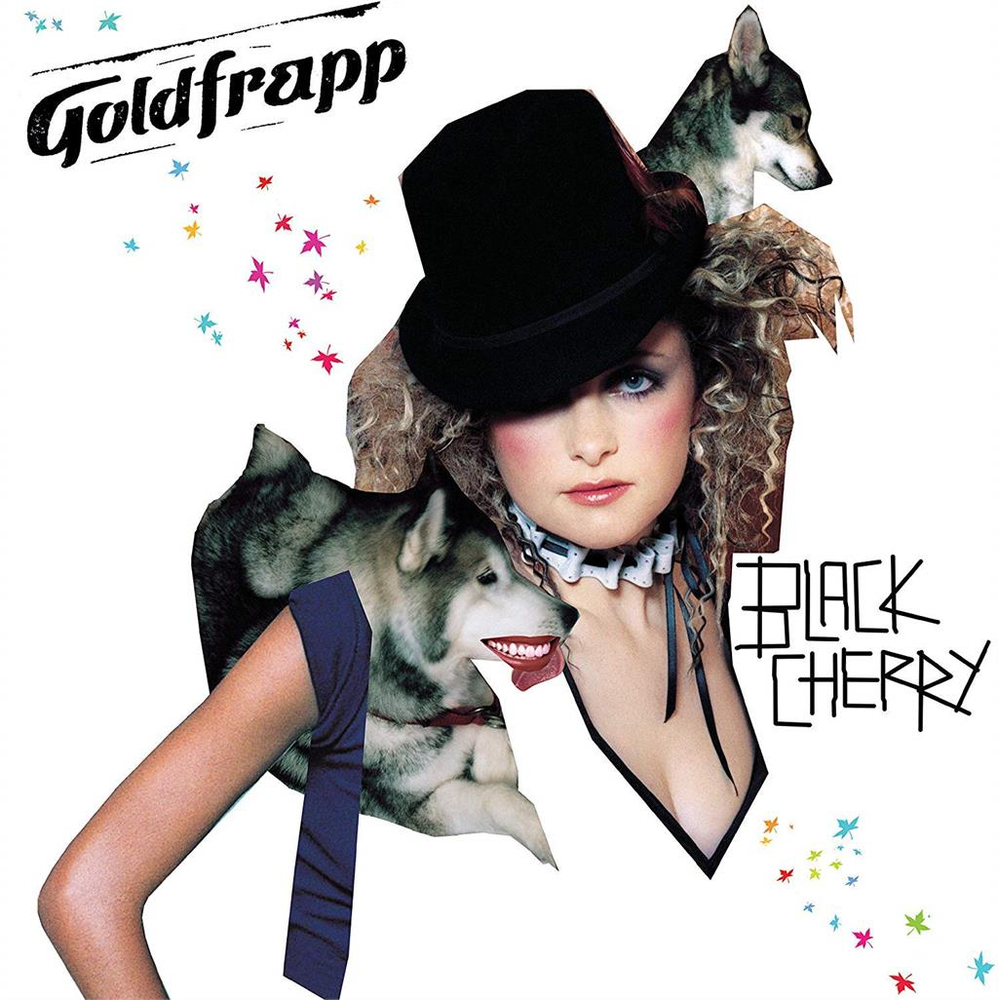

Posted on 2023-06-02 · 4 min read · Music · Dance · Goldfrapp · Album Revisit · Twenty Three
This is the first in an unplanned series of album revisits, I will write a post explaining the process soon.
“Black Cherry” is the second album by Goldfrapp, released in 2003. I bought the lead single Train while I lived in York and also the single of the title track because by then I’d discovered M83 and they’d done a remix of it.
“Black Cherry” finds the band faced with following their successful and chilled out debut album “Felt Mountain”, which back in 2000 had sounded notably weird. But nobody wants to sound like a kook forever, sometimes people want to let their hair down and just dance. That’s very much what the first two tracks anyway, especially the pulsating “Train”. To my ears, I was definitely pleased when I first played the single - I love that relentless synth riff that sounds like it’s being fed through about seventy FX pedals. I vaguely remember the single’s B-side “Big Black Cloud, Little White Lie” and the Village Hall Remix being pretty ace too. Fortunately they’re also on streaming, so I was able to check. I think I liked the B-side because it sounded very much like a “Felt Mountain” outtake - twenty years ago I likely appreciated the familiarity but today it serves a reminder that while “Felt Mountain 2” would have been nice, “Black Cherry” definitely benefitted from changing things up a bit. The Remix is mostly instrumental and adds even more Glitter beat stomp to Train, pleasant enough I guess.

The title track is also quite like the songs on “Felt Mountain”, a seductive croon that sounds like something you’d hear on an advert for luxury yoghurt (not a bad thing!) or a dark chocolate bar. It’s a bit more solid and less string-dependent than “Big Black Cloud, Little White Lie”. The M83 remix is gorgeous and probably my preferred version. ith “Tiptoe” is pretty squelchy and listening to it today for probably the first time in about a decade, I guess you could say it would have sat quite nicely on any of their later albums, well the dancey ones anyway. It has a nice loop that sounds like a sample from a computer game, something that later bands like Little Dragon tuned into. It also builds into something that sounds like a more animated version of a song like “Utopia”, drifting on swelling strings and a heartfelt chorus. I think the fade is a bit naff though.
“Deep Honey” sounds a bit more like the writing she did for Tricky on “Pumpkin”, though with more discernible lyrics. I think that even “Felt Mountain” had followed the tendency of Alison’s other collaborators (e.g. Orbital, Tricky, etc) of obscuring her words. By this point of “Black Cherry” a standout feature of the songs is how much clearer they were, how you can hear what she’s singing as well as getting hooked on how she’s singing it. It’s another song that fades disappointingly.
With hindsight, “Hairy Trees” seems to be the prototype for the sorts of songs that would dominate albums like “The Seventh Tree” and “Life of us”, a sort of pastoral electronica that’s trying to rewrite those weird folk songs that punctuate the director’s cut of “The Wicker Man”. It bubbles down into a serene mix of bubbling beats, la la las, and sweet strings, before disappearing into another disappointing fade.
Two more singles “Twist” and “Strict Machine” are next, both are pretty uptempo for Goldfrapp and show the way to their fantastic third album “Supernature”. I think I always dismissed these songs as novelties at the time, there was definitely a feeling that “Black Cherry” had repeated “Felt Mountain” but with these extra songs that didn’t really fit and made everything messy. Thankfully, the band must have had a sense of what was working well, as “Strict Machine” still sounds utterly awesome twenty years later and “Supernature” (at least as I remember it) is one of those all-killer-no-filler albums that I’m now superkeen to listen to again.
On “Black Cherry” though, the album drifts off on “Forever” and “Slippage”. The former is another example of how they’d gained enough confidence to have Alison sing the words clearly, words that aren’t about her dog needing new ears. It’s a nice song but a bit of a letdown after “Strict Machine” (another prolonged fade out too). I think “Slippage” deliberately echoes “Oompa Radar” from the first album, but unfortunately it sounds like a bad Future Sound of London B-side. It’s only worth repeating a trick if you can give a new spin on it.
Taken as a whole twenty years later, you can sort of see why people were surprised when Goldfrapp went “pop” two years later. It wasn’t so much the mainstream catching up to them, so much as the band catching up to themselves. The recipes for many of Goldfrapp’s later successes are here on “Black Cherry” but this time around they were a bit undercooked.